🔍 一次過搵晒四大地產網
中原、美聯、香港置業、利嘉閣嘅放盤，一個搜尋睇晒。免登入。
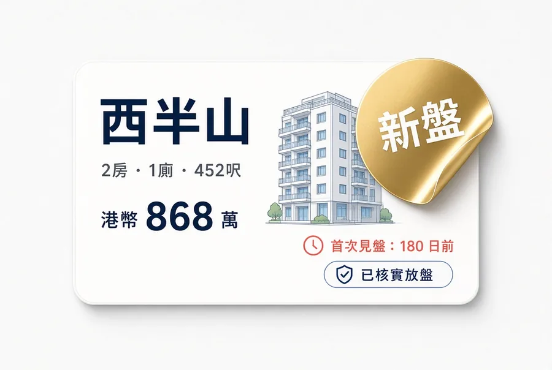
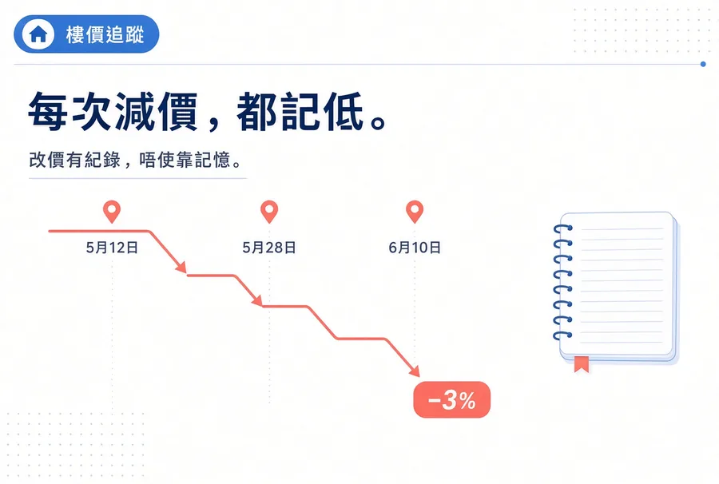
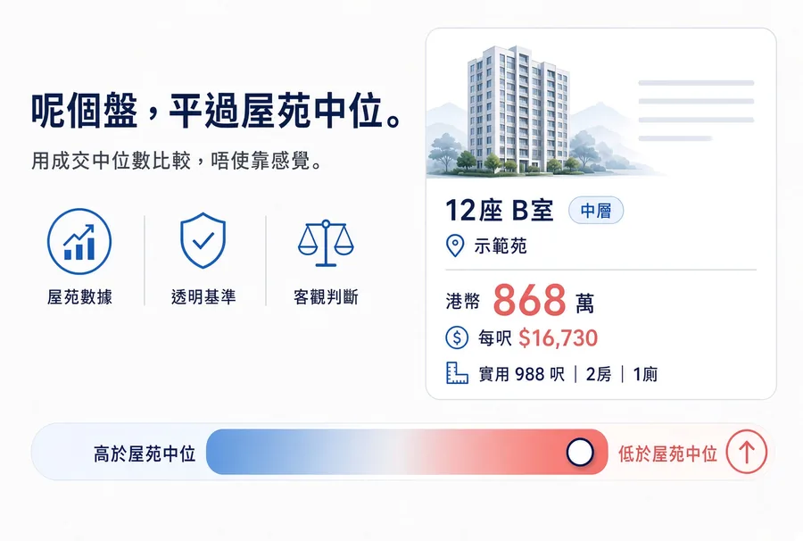
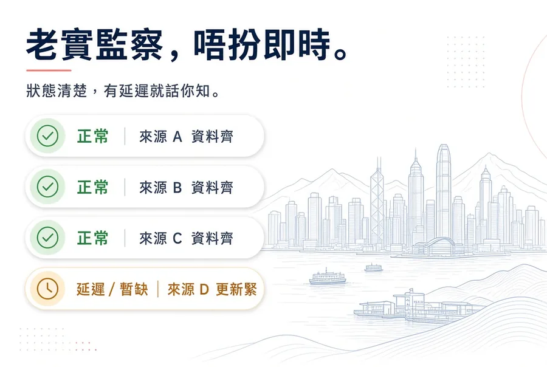
功能介紹
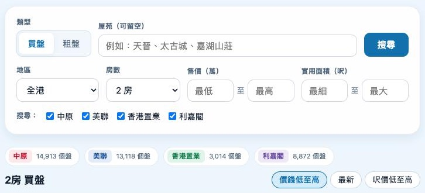
一個搜尋同時睇中原、美聯、香港置業、利嘉閣。按屋苑、地區、房數、價錢、實用面積篩選，價錢或實用呎價由低至高排，居屋未補地價盤會標明。唔使登入。
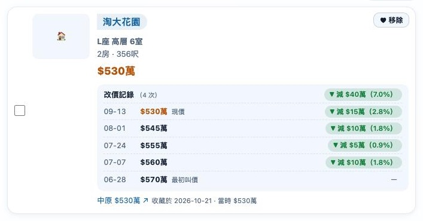
睇中嘅盤撳 ♡ 收藏，由最初叫價到而家減咗幾多、幾時減逐條列出，下架都知。揀幾個一齊分享俾屋企人，直接傳原網站連結。
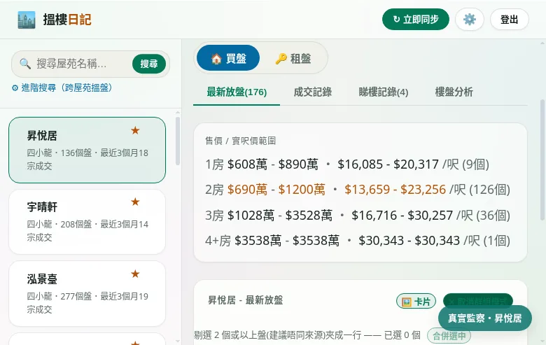
每個盤跟住真實放盤日數、減過幾多次價。同一單位喺幾個網重複放會自動合併做一行，仲會自動配對返成交價。
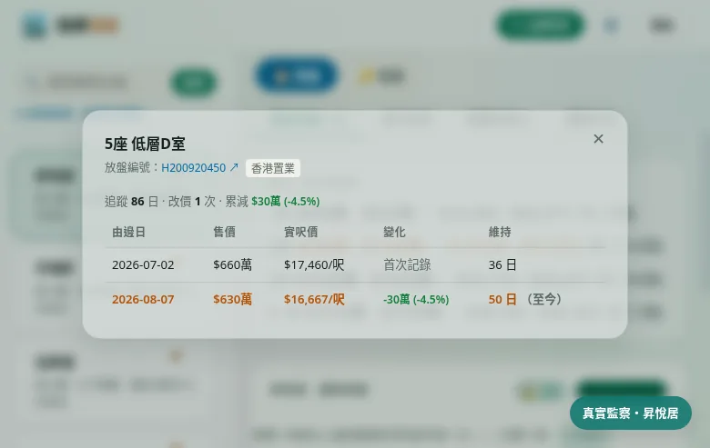
由我哋首次見到嗰日開始記，每次減價幾多、幾時減，一條時間線列曬。
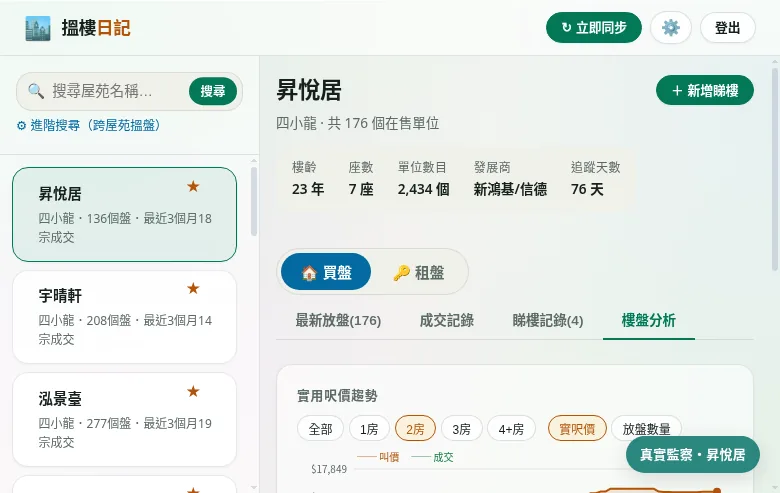
成個屋苑嘅叫價／成交呎價走勢圖，按房數拆開睇，市況一路點變一眼睇晒。
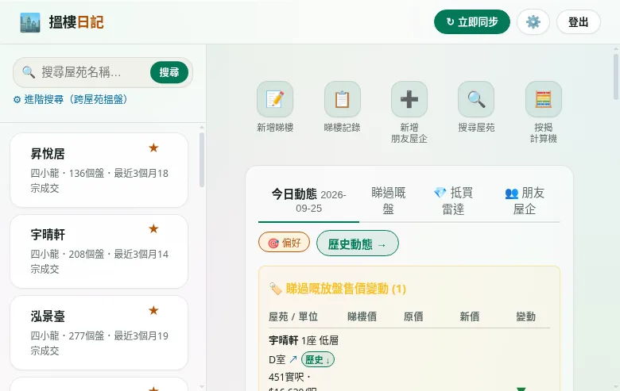
新放盤、減價、下架，同埋你睇過嗰啲盤嘅最新變動，一開 app 就見晒，唔使自己逐個翻查。
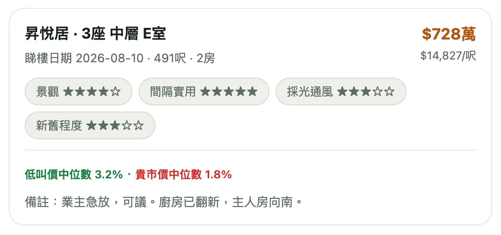
逐項自訂評分，影相、寫備註。仲會同時話你知呢個單位相對叫價同成交中位數係貴定平；成日嘅睇樓記錄可以一條連結分享俾屋企人。
四個資料來源逐個獨立監察，邊個正常、邊個延遲一目瞭然，斷過都唔會扮冇事發生嚟呃靚「今日動態」。
經紀唔會話你知嘅三件事
刷新扮新盤？我哋用首次見到嗰日計，呃唔到。
兩個月減三次價，每次都記低俾你睇晒。
自動對比成交中位數，貴定平即刻知。
同地產網站有咩分別？
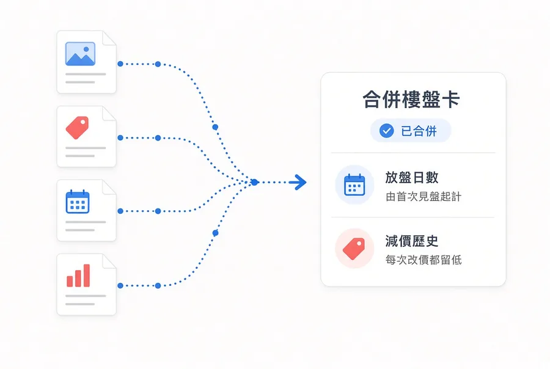
| 搵樓日記 | 地產代理網站 | |
|---|---|---|
| 立場 | ✓ 買家自己嘅工具 | 促成交易 |
| 放盤日數 | ✓ 首見日起計，刷新冇用 | 可刷新扮新盤 |
| 改價歷史 | ✓ 每次都記低 | 得返而家個價 |
| 盤消失咗 | ✓ 標記＋自動配對成交 | 冇下文 |
| 跨網比較 | ✓ 四網自動合併 | 逐個網自己睇 |
| 貴定平 | ✓ 自動對比成交中位數 | 自己揭成交 |
| 你嘅電話 | ✓ 唔會攞，亦冇經紀 | 留低等經紀跟進 |
我哋唔係地產經紀
搵樓日記係買家自己用嘅搵樓工具：唔收佣、唔促成交易、唔會推銷任何樓盤，亦唔會將你嘅資料交俾經紀或者第三方。正因為我哋同成交冇利益關係，先可以老實話你知——邊個盤放咗好耐、減過幾多次價、邊個價錢貼近成交。
老實監察，唔扮即時
四個資料來源逐個獨立監察，邊個正常、邊個延遲一目瞭然。同步偶爾斷過都唔會靜靜當冇事發生——狀態清楚，有延遲就話你知，唔會扮冇事發生嚟呃你個「今日動態」睇落好靚。
買樓教學
- 點知一個盤放咗幾耐？放盤日數、減價歷史點睇 地產網個日期唔等於真正放盤日數。點查、點用嚟講價。
- 叫價同成交價差幾多先算抵？ 用同屋苑成交呎價中位數判斷貴定平，附計算例子。
- 睇樓清單：睇樓要注意乜？ 出發前查乜、屋入面睇乜、問代理乜，同埋點樣記低同比較。
- 買樓點樣講價？ 用放盤日數、減價紀錄、成交價同銀行估價做籌碼。
- 居屋未補地價點計？ 補地價計法、第二市場邊個可以買。
- 租樓注意事項 按金、佣金、租約印花稅、生約死約一次講清。
常見問題
搵樓日記係咪地產代理？
唔係。搵樓日記係買家自己用嘅搵樓同記錄工具，唔收佣、唔促成交易，亦唔會攞你電話或者將你嘅資料交俾代理。
可以一次過搜邊幾個地產網？
中原、美聯、香港置業、利嘉閣四個，買盤同租盤都得。可以按屋苑、全港 19 個地區、房數、價錢同實用面積篩選，結果按價錢、實用呎價或者最新放盤排序；搜尋唔使登入。
要唔要錢？
四網搜尋同按揭計算機免費、唔使登入。註冊免費帳戶可以追蹤 3 個屋苑、寫睇樓記錄；放盤時間軸、呎價走勢圖、心儀樓盤改價記錄、每日 email 等進階功能屬收費版。
「放盤日數」點計？點解同地產網唔同？
我哋用地產網公佈嘅日期同我哋第一次見到個盤嗰日之間較早嗰個計，所以業主刷新放盤扮新盤都瞞唔到。地產網顯示嘅多數係「更新日期」，唔一定係第一次放盤嘅日子。
資料幾耐更新一次？
追蹤緊嘅屋苑每日早上自動同步一次（放盤、改價、下架、成交）；四網搜尋就係你撳搜尋嗰一刻即時去地產網攞。
睇樓記錄可以分享俾屋企人睇嗎？
可以。每一個或者成日嘅睇樓記錄都可以整一條分享連結，對方唔使登入都睇到；你揀包唔包相片、價錢、評分、備註，我哋嘅分析唔會分享出去，隨時可以喺設定取消。
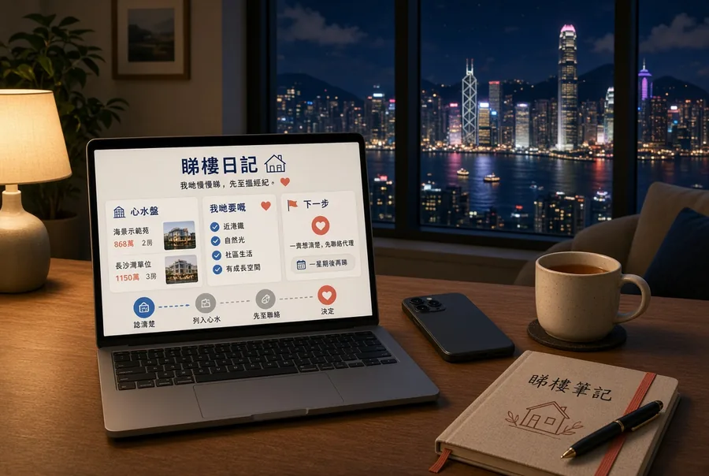